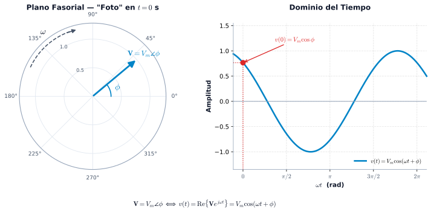

Fasores y Análisis de Circuitos en CA
De la señal sinusoidal al circuito: representación, álgebra compleja e interpretación física
⚡ Idea central
El análisis fasorial no consiste en memorizar conversiones. Consiste en aprender una cadena de razonamiento:
\boxed{ \text{Señal temporal} \;\longrightarrow\; \text{Coseno canónico} \;\longrightarrow\; \text{Fasor} \;\longrightarrow\; \text{Álgebra compleja} \;\longrightarrow\; \text{Circuito CA} }
El objetivo de esta guía es que puedas recorrer esa cadena sin perder el significado físico de cada paso.
1 Ruta de aprendizaje
01 · SEÑAL
Identifica:
- amplitud
- frecuencia
- \omega
- fase
- signo
v(t)
02 · NORMALIZAR
Lleva la señal a:
V_m\cos(\omega t+\phi)
Aquí se resuelven seno y signos negativos.
03 · FASOR
Elimina la dependencia explícita del tiempo:
\mathbf V=V\angle\phi
Usa pico o RMS, pero no los mezcles.
04 · RESOLVER
Usa:
- rectangular → sumar/restar
- polar → multiplicar/dividir
- impedancias → circuitos
Al terminar, no solo deberías poder calcular un fasor. Deberías poder explicar qué significa su magnitud, su ángulo y su signo dentro de un circuito eléctrico.
2 Señales sinusoidales: el punto de partida
Una señal sinusoidal puede escribirse como:
v(t)=V_m\cos(\omega t+\phi)
donde:
| Magnitud | Significado | Unidad |
|---|---|---|
| V_m | amplitud máxima | V |
| \omega | frecuencia angular | rad/s |
| \phi | fase inicial | ° o rad |
| t | tiempo | s |
La frecuencia angular \omega se relaciona con la frecuencia f: \quad \boxed{\omega=2\pi f}
\qquad \qquad \qquad \qquad \qquad \qquad \qquad \qquad y el período T: \quad \boxed{T=\frac{1}{f}}
\qquad \qquad \qquad \qquad \qquad \qquad \qquad \qquad Por tanto: \qquad \quad \boxed{\omega=\frac{2\pi}{T}}
Cuando pasamos al dominio fasorial, la variable t deja de aparecer explícitamente, pero la frecuencia no desaparece del circuito.
En particular:
X_L=\omega L
X_C=\frac{1}{\omega C}
La frecuencia termina determinando la impedancia y, por tanto, las corrientes y tensiones.
3 ¿Qué es realmente un fasor?
Un fasor es una representación compleja de la magnitud y fase de una señal sinusoidal respecto a una frecuencia angular determinada.
Partimos de:
v(t)=V_m\cos(\omega t+\phi)
y definimos:
\boxed{\mathbf V=V_m\angle\phi}
La reconstrucción temporal se expresa como:
\boxed{ v(t)=\operatorname{Re}\left\{\mathbf V e^{j\omega t}\right\} }
Por tanto:
\mathbf V=V_m\angle\phi \quad\Longleftrightarrow\quad v(t)=V_m\cos(\omega t+\phi)
El fasor no contiene el tiempo explícitamente.
Contiene la información necesaria para representar la amplitud y fase de una sinusoidal de frecuencia conocida. La dependencia temporal se recupera mediante e^{j\omega t}.
3.1 El sinor y la proyección temporal
El concepto geométrico puede visualizarse como un vector rotatorio cuya proyección sobre el eje real produce la sinusoidal.

La imagen debe interpretarse como una representación geométrica, no como la definición matemática completa del fasor.
4 De seno a coseno: normalización antes de obtener el fasor
La convención utilizada en esta guía es:
\boxed{V_m\cos(\omega t+\phi)}
Por eso, antes de extraer el fasor debemos normalizar la señal.
4.1 Identidades esenciales
\boxed{\sin(\theta)=\cos(\theta-90^\circ)}
\boxed{-\sin(\theta)=\cos(\theta+90^\circ)}
\boxed{-\cos(\theta)=\cos(\theta\pm180^\circ)}
4.1.1 Tabla de conversión
| Señal original | Forma coseno | Cambio de fase |
|---|---|---|
| +\sin(\omega t+\theta) | \cos(\omega t+\theta-90^\circ) | -90^\circ |
| -\sin(\omega t+\theta) | \cos(\omega t+\theta+90^\circ) | +90^\circ |
| +\cos(\omega t+\theta) | ya está normalizada | 0^\circ |
| -\cos(\omega t+\theta) | \cos(\omega t+\theta+180^\circ) | +180^\circ |
Primero normaliza la función. Después extrae el fasor.
No intentes memorizar directamente un fasor para cada combinación de seno, coseno y signo.
4.2 Ejemplo
Sea: \qquad \qquad \qquad i(t)=-4\sin(10t+15^\circ)\ \mathrm A
Normalizamos: \qquad -4\sin(10t+15^\circ) = 4\cos(10t+15^\circ+90^\circ)
Entonces: \qquad \qquad i(t)=4\cos(10t+105^\circ)
\qquad \qquad \qquad \qquad \boxed{\mathbf I=4\angle105^\circ\ \mathrm A}
5 Valor pico y valor eficaz RMS
Para una sinusoidal:
V_{\mathrm{rms}}=\frac{V_m}{\sqrt2}
por tanto:
\boxed{ V_{\mathrm{rms}}\approx0.7071V_m }
La fase no cambia al convertir de pico a RMS:
\boxed{ \mathbf V_{\mathrm{rms}} = \frac{V_m}{\sqrt2}\angle\phi }
5.1 Ejemplo
v(t)=120\cos(\omega t+30^\circ)\ \mathrm V
Fasor pico:
\mathbf V_p=120\angle30^\circ\ \mathrm V
Fasor RMS:
\mathbf V_{\mathrm{rms}} = \frac{120}{\sqrt2}\angle30^\circ = 84.85\angle30^\circ\ \mathrm V
En una misma ecuación fasorial, utiliza todos los valores en pico o todos en RMS.
Nunca mezcles:
V_{\mathrm{rms}} \quad\text{con}\quad I_{\mathrm{pico}}
sin realizar antes la conversión correspondiente.
6 ¿Cuándo puedo utilizar fasores?
La representación fasorial convencional se utiliza para:
- señales sinusoidales;
- régimen permanente;
- una frecuencia angular determinada;
- sistemas lineales donde las operaciones fasoriales sean aplicables.
Una señal no sinusoidal general no puede representarse mediante un único fasor.
Por ejemplo:
x(t)=\sin(10t)+\sin(100t)
contiene dos frecuencias diferentes.
Cada componente puede analizarse por separado mediante herramientas apropiadas, pero no existe un único fasor que represente toda la señal.
7 El plano complejo
Un número complejo puede representarse como:
\boxed{\mathbf z=x+jy}
donde:
- x es la componente real;
- y es la componente imaginaria;
- j=\sqrt{-1}.
También puede escribirse en forma polar:
\boxed{\mathbf z=r\angle\theta}
o exponencial:
\boxed{\mathbf z=re^{j\theta}}
7.1 Conversión rectangular → polar
r=\sqrt{x^2+y^2}
y el ángulo debe determinarse teniendo en cuenta el cuadrante:
\theta=\operatorname{atan2}(y,x)
atan2?
La expresión:
\arctan\left(\frac yx\right)
por sí sola no identifica correctamente todos los cuadrantes.
La función matemática equivalente a atan2(y,x) utiliza simultáneamente el signo de x y de y para determinar el ángulo correcto.
7.2 Conversión polar → rectangular
\boxed{x=r\cos\theta}
\boxed{y=r\sin\theta}
por tanto:
\boxed{ r\angle\theta = r\cos\theta+jr\sin\theta }
8 Cuadrantes: magnitud y fase con significado

| Cuadrante | x | y | Interpretación angular |
|---|---|---|---|
| I | + | + | 0^\circ<\theta<90^\circ |
| II | - | + | 90^\circ<\theta<180^\circ |
| III | - | - | -180^\circ<\theta<-90^\circ |
| IV | + | - | -90^\circ<\theta<0^\circ |
No corrijas el ángulo “a ojo”.
Primero identifica:
(x,y)
después el cuadrante y finalmente el ángulo.
9 El operador j: un giro de 90^\circ
Una de las ideas más importantes de todo el análisis fasorial es:
\boxed{j=1\angle90^\circ}
Multiplicar por j produce un giro antihorario de 90^\circ:
\boxed{j\mathbf Z=|\mathbf Z|\angle(\theta+90^\circ)}
Multiplicar por -j produce:
\boxed{-j\mathbf Z=|\mathbf Z|\angle(\theta-90^\circ)}
9.1 Ciclo de potencias
j^0=1
j^1=j
j^2=-1
j^3=-j
j^4=1
El ciclo se repite cada cuatro potencias.
También:
\boxed{\frac1j=-j}
En fasores, j no es simplemente una letra algebraica.
Es un operador que representa un desplazamiento angular de +90^\circ.
10 Operaciones con números complejos
10.1 Suma y resta
La forma rectangular es la más conveniente:
(a+jb)+(c+jd) = (a+c)+j(b+d)
10.2 Multiplicación
La forma polar es especialmente conveniente:
(r_1\angle\theta_1)(r_2\angle\theta_2) = r_1r_2\angle(\theta_1+\theta_2)
10.3 División
\frac{r_1\angle\theta_1}{r_2\angle\theta_2} = \frac{r_1}{r_2}\angle(\theta_1-\theta_2)
10.4 Conjugado
\boxed{ (a+jb)^*=a-jb }
y:
\boxed{ (r\angle\theta)^*=r\angle(-\theta) }
10.5 División rectangular
\frac{a+jb}{c+jd} = \frac{(a+jb)(c-jd)}{c^2+d^2}
por tanto:
\boxed{ \frac{a+jb}{c+jd} = \frac{ac+bd}{c^2+d^2} + j\frac{bc-ad}{c^2+d^2} }
11 Impedancia: donde el fasor se convierte en Ingeniería Eléctrica
La gran conexión entre fasores y circuitos es:
\boxed{\mathbf V=\mathbf I\mathbf Z}
o:
\boxed{\mathbf I=\frac{\mathbf V}{\mathbf Z}}
La impedancia es compleja:
\boxed{\mathbf Z=R+jX}
donde:
- R → resistencia;
- X → reactancia.
Su forma polar es:
\boxed{\mathbf Z=|\mathbf Z|\angle\theta_Z}
12 Elementos pasivos R, L y C
| Elemento | Relación temporal | Impedancia | \theta_V-\theta_I |
|---|---|---|---|
| Resistor | v=Ri | \mathbf Z_R=R | 0^\circ |
| Inductor | v=L\,di/dt | \mathbf Z_L=j\omega L | +90^\circ |
| Capacitor | i=C\,dv/dt | \mathbf Z_C=1/(j\omega C) | -90^\circ |
12.1 Resistor
\boxed{\mathbf Z_R=R=R\angle0^\circ}
Tensión y corriente están en fase.
12.2 Inductor
\boxed{\mathbf Z_L=j\omega L=\omega L\angle90^\circ}
Por tanto:
\boxed{\mathbf V_L=j\omega L\mathbf I}
La tensión adelanta a la corriente 90^\circ.
12.2.1 🧠 ELI
E antes que I → en el inductor:
V_L\text{ adelanta a }I
12.3 Capacitor
\boxed{ \mathbf Z_C= \frac1{j\omega C} = -j\frac1{\omega C} }
Por tanto:
\boxed{ \mathbf V_C=-j\frac1{\omega C}\mathbf I }
La tensión atrasa a la corriente 90^\circ.
12.3.1 🧠 ICE
I antes que E → en el capacitor:
I\text{ adelanta a }V_C
La comprensión profunda está en:
+j\Rightarrow+90^\circ
-j\Rightarrow-90^\circ
Las reglas ELI/ICE sirven para recordar rápidamente el resultado.
13 Ejemplo integrado: de la señal al circuito RLC
Consideremos:
R=30\ \Omega
L=50\ \mathrm{mH}
C=25\ \mu\mathrm F
y:
v(t)=120\cos(1000t+30^\circ)\ \mathrm V
13.1 Paso 1 — Frecuencia
\omega=1000\ \mathrm{rad/s}
13.2 Paso 2 — Impedancias
Inductor:
X_L=\omega L = 1000(0.050) = 50\ \Omega
\mathbf Z_L=j50\ \Omega
Capacitor:
X_C=\frac1{\omega C} = \frac1{1000(25\times10^{-6})} = 40\ \Omega
\mathbf Z_C=-j40\ \Omega
13.3 Paso 3 — Impedancia equivalente
Al ser un circuito serie:
\mathbf Z_T = R+\mathbf Z_L+\mathbf Z_C
\mathbf Z_T = 30+j50-j40
\boxed{\mathbf Z_T=30+j10\ \Omega}
En polar:
|\mathbf Z_T| = \sqrt{30^2+10^2} = 31.62\ \Omega
\theta_Z = \arctan\left(\frac{10}{30}\right) = 18.43^\circ
por tanto:
\boxed{\mathbf Z_T=31.62\angle18.43^\circ\ \Omega}
13.4 Paso 4 — Corriente
Usando fasores pico:
\mathbf V=120\angle30^\circ\ \mathrm V
entonces:
\mathbf I = \frac{\mathbf V}{\mathbf Z_T}
\mathbf I = \frac{120\angle30^\circ} {31.62\angle18.43^\circ}
\boxed{ \mathbf I = 3.80\angle11.57^\circ\ \mathrm A }
La señal temporal:
\boxed{ i(t)=3.80\cos(1000t+11.57^\circ)\ \mathrm A }
13.5 Paso 5 — Tensiones individuales
Resistor:
\mathbf V_R = \mathbf I R = 114.0\angle11.57^\circ\ \mathrm V
Inductor:
\mathbf V_L = \mathbf I(j50) = 190.0\angle101.57^\circ\ \mathrm V
Capacitor:
\mathbf V_C = \mathbf I(-j40) = 152.0\angle-78.43^\circ\ \mathrm V
Finalmente:
\boxed{ \mathbf V_R+\mathbf V_L+\mathbf V_C = \mathbf V }
Esta es la conexión fundamental:
\boxed{ v(t) \rightarrow \mathbf V \rightarrow \mathbf Z \rightarrow \mathbf I \rightarrow i(t) }
14 Diagrama fasorial: no basta con calcular
Un diagrama fasorial debe permitir responder preguntas como:
- ¿Cuál es la referencia?
- ¿Qué fasor adelanta?
- ¿Qué fasor atrasa?
- ¿Por qué?
- ¿Cuál es la suma resultante?
- ¿Qué indica el ángulo de la impedancia?
Si:
\mathbf Z=|\mathbf Z|\angle\theta_Z
entonces:
\theta_V-\theta_I=\theta_Z
Por tanto:
- \theta_Z>0 → comportamiento inductivo;
- \theta_Z=0 → comportamiento resistivo;
- \theta_Z<0 → comportamiento capacitivo.
15 Banco de Ejercicios y Problemas de Práctica
A continuación se presenta un compendio graduado desde niveles fundamentales hasta análisis de circuitos completos en CA. En cada ejercicio, el enunciado y su desarrollo analítico completo se presentan en paralelo para su estudio directo.
15.1 🟢 Nivel 1: Fundamentos y Transformaciones
15.1.1 Ejercicio 1 — Conversión de señales temporales a fasores
15.1.1.0.1 📋 Enunciado
Dadas las siguientes señales temporales de corriente y tensión:
v(t) = 120\sqrt{2}\cos(377t - 45^\circ)\ \mathrm V
i(t) = -10\sin(377t + 30^\circ)\ \mathrm A
Determinar:
- El fasor en valor pico (\mathbf V_p, \mathbf I_p).
- El fasor en valor eficaz o RMS (\mathbf V_{\mathrm{rms}}, \mathbf I_{\mathrm{rms}}).
15.1.1.0.2 💡 Desarrollo y Solución
1. Para la tensión v(t): - Ya está en forma coseno positiva canónica: \boxed{\mathbf V_p = 120\sqrt{2}\angle -45^\circ \approx 169.71\angle -45^\circ\ \mathrm V} - Para el valor eficaz RMS: V_{\mathrm{rms}} = \frac{120\sqrt{2}}{\sqrt{2}} = 120\ \mathrm V \implies \boxed{\mathbf V_{\mathrm{rms}} = 120\angle -45^\circ\ \mathrm V}
2. Para la corriente i(t): - Normalizamos usando -\sin(\alpha) = \cos(\alpha + 90^\circ): i(t) = 10\cos(377t + 30^\circ + 90^\circ) = 10\cos(377t + 120^\circ)\ \mathrm A - Fasor pico: \boxed{\mathbf I_p = 10\angle 120^\circ\ \mathrm A} - Fasor RMS: I_{\mathrm{rms}} = \frac{10}{\sqrt{2}} \approx 7.07\ \mathrm A \implies \boxed{\mathbf I_{\mathrm{rms}} = 7.07\angle 120^\circ\ \mathrm A}
15.1.2 Ejercicio 2 — Conversión entre formas rectangular y polar
15.1.2.0.1 📋 Enunciado
Realizar las siguientes conversiones entre dominios complejos considerando el cuadrante correspondiente:
Convertir a forma polar: \mathbf Z_1 = 6 + j8\ \Omega \mathbf Z_2 = -5 + j5\ \Omega
Convertir a forma rectangular: \mathbf I = 10\angle -60^\circ\ \mathrm A
15.1.2.0.2 💡 Desarrollo y Solución
1. Para \mathbf Z_1 = 6 + j8\ \Omega (Cuadrante I, x>0, y>0): - Módulo: |\mathbf Z_1| = \sqrt{6^2 + 8^2} = \sqrt{36 + 64} = \sqrt{100} = 10\ \Omega - Ángulo: \theta_1 = \arctan\left(\frac{8}{6}\right) \approx 53.13^\circ \boxed{\mathbf Z_1 = 10\angle 53.13^\circ\ \Omega}
2. Para \mathbf Z_2 = -5 + j5\ \Omega (Cuadrante II, x<0, y>0): - Módulo: |\mathbf Z_2| = \sqrt{(-5)^2 + 5^2} = \sqrt{50} = 5\sqrt{2} \approx 7.07\ \Omega - Ángulo: \theta_2 = 180^\circ - \arctan\left(\frac{5}{5}\right) = 180^\circ - 45^\circ = 135^\circ \boxed{\mathbf Z_2 = 5\sqrt{2}\angle 135^\circ \approx 7.07\angle 135^\circ\ \Omega}
3. Para \mathbf I = 10\angle -60^\circ\ \mathrm A: - Parte real: I_x = 10\cos(-60^\circ) = 10(0.5) = 5\ \mathrm A - Parte imaginaria: I_y = 10\sin(-60^\circ) = 10\left(-\frac{\sqrt{3}}{2}\right) \approx -8.66\ \mathrm A \boxed{\mathbf I = 5 - j8.66\ \mathrm A}
15.2 🟡 Nivel 2: Operaciones Complejas e Impedancias
15.2.1 Ejercicio 3 — Suma fasorial en un nodo (Ley de Kirchhoff de Corrientes)
15.2.1.0.1 📋 Enunciado
En un nodo de un circuito de corriente alterna convergen dos corrientes:
i_1(t) = 4\cos(\omega t + 30^\circ)\ \mathrm A
i_2(t) = 6\sin(\omega t + 60^\circ)\ \mathrm A
Determinar:
La corriente total i_T(t) = i_1(t) + i_2(t) en el dominio del tiempo.
15.2.1.0.2 💡 Desarrollo y Solución
Paso 1: Convertir a fasores en forma coseno canónica: - \mathbf I_1 = 4\angle 30^\circ\ \mathrm A - i_2(t) = 6\cos(\omega t + 60^\circ - 90^\circ) = 6\cos(\omega t - 30^\circ) \implies \mathbf I_2 = 6\angle -30^\circ\ \mathrm A
Paso 2: Descomponer a forma rectangular para sumar: \mathbf I_1 = 4\cos(30^\circ) + j4\sin(30^\circ) = 2\sqrt{3} + j2 \approx 3.4641 + j2.0000\ \mathrm A \mathbf I_2 = 6\cos(-30^\circ) + j6\sin(-30^\circ) = 3\sqrt{3} - j3 \approx 5.1962 - j3.0000\ \mathrm A
Paso 3: Suma fasorial \mathbf I_T = \mathbf I_1 + \mathbf I_2: \mathbf I_T = (3.4641 + 5.1962) + j(2.0000 - 3.0000) = 8.6603 - j1.0000\ \mathrm A
Paso 4: Conversión a polar y retorno al tiempo: - Módulo: |\mathbf I_T| = \sqrt{8.6603^2 + (-1)^2} = \sqrt{76} \approx 8.72\ \mathrm A - Ángulo (Cuadrante IV): \theta = \arctan\left(\frac{-1}{8.6603}\right) \approx -6.59^\circ \mathbf I_T \approx 8.72\angle -6.59^\circ\ \mathrm A \boxed{i_T(t) = 8.72\cos(\omega t - 6.59^\circ)\ \mathrm A}
15.2.2 Ejercicio 4 — Evaluación de expresión compleja con conjugado
15.2.2.0.1 📋 Enunciado
Calcular el valor del número complejo \mathbf X:
\mathbf X = \left[ \frac{(4 + j3)(2 - j4)}{-1 + j2} + 5\angle -45^\circ \right]^*
Expresar el resultado en forma rectangular y polar.
15.2.2.0.2 💡 Desarrollo y Solución
Paso 1: Multiplicación del numerador (j^2 = -1): (4+j3)(2-j4) = 8 - j16 + j6 - j^2(12) = (8+12) - j10 = 20 - j10
Paso 2: División multiplicando por el conjugado (-1 - j2): \frac{20 - j10}{-1 + j2} \cdot \frac{-1 - j2}{-1 - j2} = \frac{-20 - j40 + j10 + j^2(20)}{1 + 4} = \frac{-40 - j30}{5} = -8 - j6
Paso 3: Convertir 5\angle -45^\circ a rectangular y sumar: 5\angle -45^\circ = 5\cos(-45^\circ) + j5\sin(-45^\circ) \approx 3.5355 - j3.5355 \mathbf Z_{\text{interior}} = (-8 - j6) + (3.5355 - j3.5355) = -4.4645 - j9.5355
Paso 4: Aplicar el operador conjugado (\ )^*: Cambiamos el signo de la parte imaginaria: \boxed{\mathbf X = -4.4645 + j9.5355}
Paso 5: Conversión a forma polar (Cuadrante II, x<0, y>0): - Módulo: |\mathbf X| = \sqrt{(-4.4645)^2 + (9.5355)^2} \approx 10.529 - Ángulo: \theta = 180^\circ - \arctan\left(\frac{9.5355}{4.4645}\right) = 180^\circ - 64.91^\circ \approx +115.09^\circ \boxed{\mathbf X \approx 10.529\angle 115.09^\circ}
15.2.3 Ejercicio 5 — Impedancias en paralelo (Z_1 \parallel Z_2)
15.2.3.0.1 📋 Enunciado
Dos impedancias pasivas se conectan en paralelo:
Z_1 = 10 + j15\ \Omega
Z_2 = 20 - j10\ \Omega
Determinar:
- La impedancia equivalente Z_{eq} = \frac{Z_1 Z_2}{Z_1 + Z_2}.
- Indicar si el conjunto resultante tiene comportamiento global inductivo o capacitivo.
15.2.3.0.2 💡 Desarrollo y Solución
Paso 1: Suma en el denominador (Z_1 + Z_2): Z_1 + Z_2 = (10 + 20) + j(15 - 10) = 30 + j5\ \Omega
Paso 2: Producto en el numerador (Z_1 \cdot Z_2): Z_1 \cdot Z_2 = (10 + j15)(20 - j10) = 200 - j100 + j300 + 150 = 350 + j200\ \Omega^2
Paso 3: División por el conjugado (30 - j5): Z_{eq} = \frac{350 + j200}{30 + j5} \cdot \frac{30 - j5}{30 - j5} = \frac{11500 + j4250}{900 + 25} = \frac{11500 + j4250}{925} \boxed{Z_{eq} \approx 12.43 + j4.59\ \Omega}
Paso 4: Conversión a forma polar: - Módulo: |Z_{eq}| = \sqrt{12.43^2 + 4.59^2} \approx 13.25\ \Omega - Ángulo: \theta = \arctan\left(\frac{4.59}{12.43}\right) \approx +20.28^\circ \boxed{Z_{eq} \approx 13.25\angle 20.28^\circ\ \Omega}
Conclusión física:
Como la reactancia equivalente es positiva (X_{eq} = +4.59\ \Omega) y \theta > 0, el circuito se comporta de forma globalmente inductiva (la tensión adelanta a la corriente).
15.3 🔴 Nivel 3: Circuitos RLC en Régimen Permanente
15.3.1 Ejercicio 6 — Análisis completo de un circuito RLC serie
15.3.1.0.1 📋 Enunciado
Un circuito RLC serie está alimentado por una fuente de tensión sinusoidal:
v(t) = 100\cos(200t + 10^\circ)\ \mathrm V
Los componentes pasivos son: - Resistencia: R = 4\ \Omega - Inductancia: L = 25\ \mathrm{mH} - Capacitancia: C = 500\ \mu\mathrm{F}
Calcular: 1. Las impedancias complejas \mathbf Z_R, \mathbf Z_L, \mathbf Z_C y la total \mathbf Z_{eq}. 2. La corriente fasorial \mathbf I en el circuito. 3. Las caídas de tensión fasoriales \mathbf V_L y \mathbf V_C. 4. Determinar si el circuito está en adelanto o atraso.
15.3.1.0.2 💡 Desarrollo y Solución
Paso 1: Frecuencia angular e impedancias: De la fuente, \omega = 200\ \mathrm{rad/s} y \mathbf V = 100\angle 10^\circ\ \mathrm V. - \mathbf Z_R = 4\ \Omega - \mathbf Z_L = j\omega L = j(200)(0.025) = j5\ \Omega - \mathbf Z_C = \frac{1}{j\omega C} = \frac{-j}{(200)(500\times 10^{-6})} = \frac{-j}{0.1} = -j10\ \Omega
Impedancia equivalente total: \mathbf Z_{eq} = 4 + j5 - j10 = 4 - j5\ \Omega En forma polar: |\mathbf Z_{eq}| = \sqrt{4^2 + (-5)^2} = \sqrt{41} \approx 6.403\ \Omega \theta_Z = \arctan\left(\frac{-5}{4}\right) \approx -51.34^\circ \implies \boxed{\mathbf Z_{eq} = 6.403\angle -51.34^\circ\ \Omega}
Paso 2: Corriente en el circuito (Ley de Ohm fasorial): \mathbf I = \frac{\mathbf V}{\mathbf Z_{eq}} = \frac{100\angle 10^\circ}{6.403\angle -51.34^\circ} = \boxed{15.62\angle 61.34^\circ\ \mathrm A}
Paso 3: Caídas de tensión en L y C: - Tensión en el inductor: \mathbf V_L = \mathbf I \cdot \mathbf Z_L = (15.62\angle 61.34^\circ)(5\angle 90^\circ) = \boxed{78.10\angle 151.34^\circ\ \mathrm V} - Tensión en el capacitor: \mathbf V_C = \mathbf I \cdot \mathbf Z_C = (15.62\angle 61.34^\circ)(10\angle -90^\circ) = \boxed{156.20\angle -28.66^\circ\ \mathrm V}
Conclusión física:
Como X_C > X_L (10\ \Omega > 5\ \Omega), el ángulo de la impedancia es negativo (\theta_Z = -51.34^\circ). El circuito es capacitivo y la corriente adelanta a la tensión en 51.34^\circ.
15.3.2 Ejercicio 7 — Divisor de corriente y tensión común en paralelo
15.3.2.0.1 📋 Enunciado
Una fuente de corriente sinusoidal \mathbf I_s = 5\angle 0^\circ\ \mathrm A alimenta dos ramas en paralelo: - Rama A: \mathbf Z_A = 6 + j8\ \Omega (Carga Inductiva) - Rama B: \mathbf Z_B = 12 - j16\ \Omega (Carga Capacitiva)
Calcular: 1. La corriente \mathbf I_A que fluye por la rama A mediante la fórmula del divisor de corriente: \mathbf I_A = \mathbf I_s \cdot \frac{\mathbf Z_B}{\mathbf Z_A + \mathbf Z_B} 2. La tensión común \mathbf V en bornes del circuito en paralelo.
15.3.2.0.2 💡 Desarrollo y Solución
Paso 1: Suma de impedancias en el denominador: \mathbf Z_A + \mathbf Z_B = (6 + 12) + j(8 - 16) = 18 - j8\ \Omega En forma polar: |\mathbf Z_A + \mathbf Z_B| = \sqrt{18^2 + (-8)^2} = \sqrt{388} \approx 19.70\ \Omega \theta_{\text{suma}} = \arctan\left(\frac{-8}{18}\right) \approx -23.96^\circ \implies \mathbf Z_A + \mathbf Z_B \approx 19.70\angle -23.96^\circ\ \Omega
Paso 2: Formas polares del numerador: - \mathbf I_s = 5\angle 0^\circ\ \mathrm A - \mathbf Z_B = 12 - j16\ \Omega = \sqrt{12^2 + (-16)^2}\angle\arctan(-16/12) = 20\angle -53.13^\circ\ \Omega
Paso 3: Aplicación del divisor de corriente: \mathbf I_A = \frac{(5\angle 0^\circ)(20\angle -53.13^\circ)}{19.70\angle -23.96^\circ} = \frac{100\angle -53.13^\circ}{19.70\angle -23.96^\circ} \mathbf I_A = \left(\frac{100}{19.70}\right)\angle [-53.13^\circ - (-23.96^\circ)] \boxed{\mathbf I_A \approx 5.08\angle -29.17^\circ\ \mathrm A}
Paso 4: Tensión común en bornes \mathbf V: Calculamos \mathbf V = \mathbf I_A \cdot \mathbf Z_A con \mathbf Z_A = 6 + j8\ \Omega = 10\angle 53.13^\circ\ \Omega: \mathbf V = (5.08\angle -29.17^\circ)(10\angle 53.13^\circ) = \boxed{50.80\angle 23.96^\circ\ \mathrm V}
16 Reto de interpretación
No calcules todavía. Razona.
Si:
\mathbf Z=8+j6\ \Omega
responde:
- ¿Es inductiva o capacitiva?
- ¿Cuál es el ángulo de \mathbf Z?
- ¿La tensión adelanta o atrasa a la corriente?
- ¿Qué ocurriría si la parte imaginaria fuese negativa?
1. Tipo de comportamiento: Como la reactancia es positiva: X = +6 > 0 el circuito tiene comportamiento inductivo.
2. Magnitud (módulo) de la impedancia: Aplicando el teorema de Pitágoras: |\mathbf Z| = \sqrt{R^2 + X^2} = \sqrt{8^2 + 6^2} = \sqrt{64 + 36} = \sqrt{100} = 10\ \Omega
3. Ángulo de fase: Como se ubica en el primer cuadrante (R > 0, X > 0): \theta_Z = \arctan\left(\frac{X}{R}\right) = \arctan\left(\frac{+6}{+8}\right) = \arctan(0.75) \approx +36.87^\circ
4. Forma polar final: \boxed{\mathbf Z = 10\angle 36.87^\circ\ \Omega}
5. Conclusión física: - Al ser inductivo (\theta_Z > 0), la tensión adelanta a la corriente en 36.87^\circ (o la corriente atrasa a la tensión en 36.87^\circ). - Si la reactancia hubiese sido negativa (X = -6, capacitiva), el ángulo sería \theta_Z = -36.87^\circ y la tensión atrasaría respecto a la corriente.
17 Herramienta interactiva: rectangular ↔︎ polar
🧮 Explora un número complejo y su plano fasorial
La herramienta no reemplaza el procedimiento.
Primero identifica mentalmente el cuadrante y estima el resultado. Después utiliza la calculadora para comprobarlo.
18 Tabla maestra de referencia
| Concepto | Expresión | Interpretación |
|---|---|---|
| Fasor | \mathbf V=V\angle\phi | magnitud + fase |
| Rectangular | x+jy | componentes |
| Polar | r\angle\theta | magnitud + ángulo |
| Exponencial | re^{j\theta} | forma compacta |
| Giro +90^\circ | j\mathbf V | operador inductivo |
| Giro -90^\circ | -j\mathbf V | operador capacitivo |
| Resistor | Z_R=R | fase 0^\circ |
| Inductor | Z_L=j\omega L | fase +90^\circ |
| Capacitor | Z_C=-j/(\omega C) | fase -90^\circ |
| Ley de Ohm CA | \mathbf V=\mathbf I\mathbf Z | relación fasorial |
| Corriente | \mathbf I=\mathbf V/\mathbf Z | resolución de circuito |
19 La cadena causal completa
El estudiante debe poder reconstruir esta cadena:
\boxed{ \begin{array}{c} v(t)\\ \downarrow\\ V_m,\omega,\phi\\ \downarrow\\ V_m\cos(\omega t+\phi)\\ \downarrow\\ \mathbf V=V\angle\phi\\ \downarrow\\ \mathbf Z=R+jX\\ \downarrow\\ \mathbf I=\mathbf V/\mathbf Z\\ \downarrow\\ \text{tensiones y corrientes}\\ \downarrow\\ \text{interpretación física} \end{array} }
Esta es la competencia que debe quedar consolidada antes de avanzar hacia potencia en CA.
20 ¿Qué sigue después de Fasores?
Fasores es la puerta de entrada, no el final del análisis de CA.
La progresión natural es:
\boxed{\text{Fasores}}
↓
\boxed{\text{Impedancias}}
↓
\boxed{\text{Circuitos CA}}
↓
\boxed{\text{Potencia compleja}}
↓
\boxed{\text{Factor de potencia}}
↓
\boxed{\text{Corrección del factor de potencia}}
↓
\boxed{\text{Sistemas trifásicos}}
Una vez dominada esta guía, el siguiente paso es Potencia en CA:
\boxed{ \mathbf S=\mathbf V\mathbf I^* }
y la relación:
\boxed{ \mathbf S=P+jQ }
Aquí los fasores dejan de ser solamente una herramienta de cálculo y comienzan a explicar potencia activa, reactiva, aparente y factor de potencia.